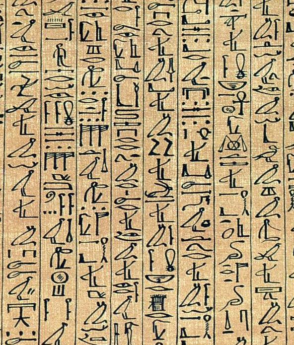
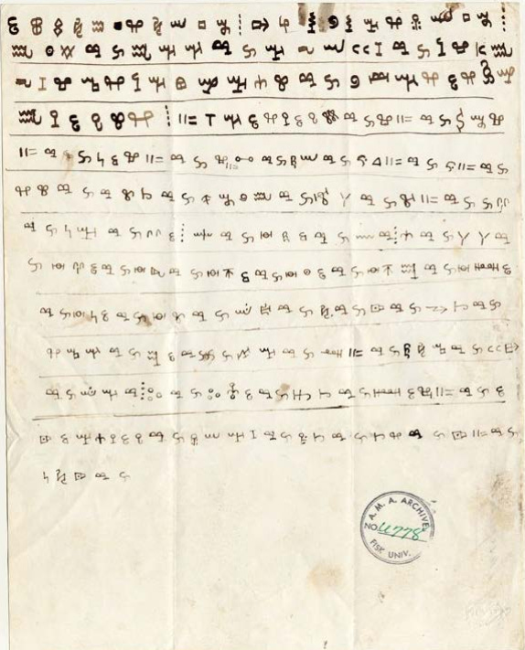
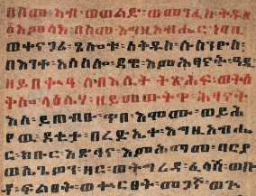

Africa
Home

Cursive Egyptian hieroglyphs

Vai manuscript from the 19th century

Portion of a Ge'ez prayer scroll
African abjads
African abugidas
African alphabets
African ideographies & pictographies
African logographies
African semisyllabaries
African syllabaries